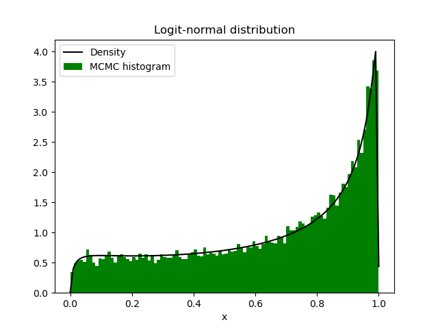

1D examples
Sampling 1D distributions with MCMC Random-Walk
In this section we illustrate how to sample a target distribution in 1D using Random-Walk algorithm. For it, we present three relatively unusual distributions (compared with Gaussian, Uniform, Gamma, etc). Once the Markov Chain is generated, the convergence of the chain to the target distribution is analized with the trace. While the behaviour of the distribution is analized with a histogram of each component.
Gumbel distribution
We begin presenting the Gumbel distribution, which is given by the density:
$$ \pi(x)=\frac{1}{\beta} e^{-\left(z+e^{-z}\right)} \quad \text { with } \quad z=\frac{x-\mu}{\beta}. $$
This distribution is classical in the study of hidrological models, specificially in the modelling of floods (see e.g., [1,3]). Let us noticed that due the structure of the density, this distribution is not easy to sample with the inverse \(F^{-1}\). Here we present an ensemble generated with RW and where the parameters are:
$$ \mu=1 \quad \text { and } \quad \sigma=1.$$
The parameters of RW are \(\Gamma = \gamma I\) and a total size \(N = 30000\). We present on the next figures the resultant trace and histogram generated.
Markov chain trace

Histogram
Weibull distribution
As second example we have the Weibull distribution defined by the density:
$$ f(x)=\frac{k}{\lambda}\left(\frac{x}{\lambda}\right)^{k-1} e^{(x / \lambda)^k} \mathbb{I}_{[0, \infty)}(x).$$
This distribution has a lot of applications, including Geophysics, Food Science, Enviroment, Nature, Medical Science, etc (see e.g., [4]).
The parameters choosen for this distribution are:
$$ k=1 \quad \text { and } \quad \lambda=1.1, $$
while the RW parameters are \(\Gamma = \gamma I\) and an enseble of size \(N = 30000\). The next figures show the trace and histogram of the distribution.
Markov chain trace
Histogram
Logit-normal distribution
Finally we introduce the Logit-normal distribution (sometimes called Logistic-Normal). A distribution with support in a compact set, and usually used in the Analysis of compositional data, specificially in application as sedimentology, petrology or biochemistry (see e.g., [2]). The denisty of this distribution is defined as follows:
$$ f(x)=\frac{1}{\sigma \sqrt{2 \pi}} \frac{1}{x(1-x)} e^{-\frac{(\operatorname{logit}(x)-\mu)^2}{2 \sigma^2}} \mathbb{I}_{(0,1)}(x) $$
Here, we have a simulation with of RW such that \(\Gamma = \gamma I\) and with an ensemble of size \(N = 30000\). The parameters of the density are:
$$ \mu=1 \quad \text { and } \quad \sigma=2.$$
Now, we show in the next figures the trace and histograms respectively.
Markov chain trace
Histogram

Code
Github
Bibliography
[1] Anghel, C. G. (2024). Revisiting the Use of the Gumbel Distribution: A Comprehensive Statistical Analysis Regarding Modeling Extremes and Rare Events. Mathematics, 12(16), 2466.
[2] Atchison, J., & Shen, S. M. (1980). Logistic-normal distributions: Some properties and uses. Biometrika, 67(2), 261-272.
[3] Gumbel, E. J. (1941). The return period of flood flows. The annals of mathematical statistics, 12(2), 163-190.
[4] Lai, C. D., Murthy, D. N., & Xie, M. (2006). Weibull distributions and their applications. In Springer Handbooks (pp. 63-78). Springer.